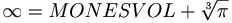

De: La Frikipedia, la enciclopedia extremadamente seria.
De: La Frikipedia, la enciclopedia extremadamente seria. De: La Frikipedia, la enciclopedia extremadamente seria.
El Teorema Puellano palabra de origen latín proveniente de la expresión Puelleanus (cuyo origen es Puelle, en extremo cariñoso y Anus, no se necesita explicación aquí), es una relación Universidad de Chile Gerard L'Puellè. Cabe destacar que este teorema sostiene el equilibrio universal ya que sin él ningun procedimiento matemático sería posible de realizar inclusive los tan sencillos como la Suma.
Gerard L'Puellè define el Teorema Puellano como: "Todo número es igual a sí mismo". Es decir: 1 = 1, 2 = 2,..., k = k,... n = n, y esto se cumple para todo n ∈.
Lo que puede ser expresado de la siguiente forma: 
El 31 de Febrero del 2005 el Teorema Puellano fue certificado y aprobado por el Consejo Superior de las Matemáticas para la Vida Sana, que en este momento fue considerado por todos los matemáticos como una formula que cambiaría el origen de la historia y de humanidad . Esta formula indujo a muchos descubrimientos como el espejo real de los números o el teorema del Pi. Puellano en este momento empezó a mostrar gran interés por los espejos y por sus propiedades.Este teorema en 2010 podría ser considerado como la teoría divina y perfecta de las matemáticas hasta el momento. .[1][2]
El Puellano no sólo es aplicable a las matemática sino también a todo ámibito de la vida. En el seminario, realizado en el Anfiteatro (Sala P-101), "El Puellano y tu vida diaria" el científico planteó lo que denominó Relación Puellística donde dos o más objetos tendrán diversos tipos de relaciones bajo el concepto del Teorema Puellano de la siguiente manera:
En algunos países también se conoce como Relación Puellana.
Este debate se centra en un descubrimiento realizado por el propio Gererd L'Puellè en torno a un hecho cotidiano que se puede resolver a través del Puellano. Cuando dos personas discuten acerca de un tema cualquiera uno de los dos utiliza el argumento "Ponte en mi lugar" para acaparar la victoria de esta discusión. L'Puellè descubrió que el mejor contrargumento es contestar con la frase "Tú eres Tú y Yo soy Yo". Este argumento es irrebatible dadas las relaciones Puellísticamente Puras Tu=Tu y Yo=Yo donde la pureza se justifica en que las personas referidas como Tu y Tu son la misma, al igual que Yo y Yo.
Existe una normas del Puellano. Si se supone una relación como: Nada = Nada, estamos, aparentemente, frente a una Relación Puellísticamente Pura. Pero se analiza la siguiente discusión "Cuando se habla nada nos estamos refiriendo a un concepto existente, no se puede hablar o referir a algo si esto no existe (o es, efectivamente nada). Por ello no tiene sentido la relación Nada = Nada". Hasta ahora no se ha podido demostrar el Puellano en la relación Nada = Nada constituyendo uno de los pocos ejemplos, no demostrables a través de la Puellística
Expertos peritos puellisticomatemáticos desafiaron el teorema planteando lo que se conoce como la paradoja de las semioficinas. Plantearon el siguiente razonamiento: Se parte de la base que semi = semi y oficina = oficina => semioficina = semioficina pero si tomamos una oficina y la dividimos por 2, obteniendo así dos semioficinas, bajo una técnica A (por ejemplo dividiendola con una línea vertical que cruce por la mitad de la oficina) y luego se divide nuevamente por 2, obteniendo nuevamente dos semioficinas, bajo una técnica B (por ejemplo dividiendola con una línea horizonal a través de las paredes) entonces se obtienen dos tipos de semioficinas distintas haciendo inválida la igualdad semioficina = semioficina. Rápidamente en un paper titulado "Semioficinas y el Puellano", Gerard defendió el teorema argumentando "...la verdad es simple: una semioficina es un objeto totalmente distinto a una oficina o a la mitad de una oficina, usted no se refiere al número 4 como semiocho". Los matemáticos que plantearon la paradoja de las semioficinas hoy se encuentran leyendo cuentos en un hogar de ancianos.
Científicos de las altas esferas del conocimiento universal descubrieron que los números 68 y 69 no sólo cumplen con las lógicas relaciones Puellísticas Puras 68 = 68 y 69 = 69. También constituyen una relación Puellística (no Pura), es decir, es válido sentenciar que 68 = 69. La demostración se reduce a una sencilla frase: "Hagamos el 68, vos me chupás la [censurado] y yo te debo una". Esta relación es considerada uno de los avances científicos más relevantes de la última década
Otra relación Puellística recientemente encontrada la constituye la relacion 1 = 0.9999... fácilmente demostrable utilizando conceptos del Puellano.
Relación Puellística entre Naipe y Basto En el 2003 Gerard sorprendió con un interesante planteamiento: "Con el Puellano es posible demostrar que Naipe = Basto". Expertos matemáticos y jugadores de naipes se burlaron de su planteamiento argumentando que "basto" es una pinta del "naipe" y por lo tanto una relación Puellística entre ellos es imposible. En una audaz demostración Gerard dejó en claro quien manda en la ciencia Puellística.
La discusión en esta demostración gira en torno a la si la igualdad final resulta ser Puellística o Semipuellística.
Diversos estudios plantean lo que se conoce como La Trampa Lógica del Puellano donde dos personas intercambian cuatro sencillas frases y quedan atrapadas en un círculo de discusión que se puede extender hasta el infinito.
La conversación debe seguir estos cuatro primeros pasos:
La Trampa se basa en el hecho de que (fonéticamente) ¿Por qué no? = Porque no
Donde: Si no = no y por qué = porque => no + por qué = no + porque <=> por qué no = porque no.
Un grupo de Matemáticos de la Universidad Congo publicaron un famoso paper llamado "Concepto: La Pureza de la Realidad" generando un debate filosófico alrededor del Teorema Puellano. Tomando como referencia la polémica de La Paradoja de las Semioficinas, discuten sobre las diferencias entre los objetos como tal y su concepto es decir una mesa como materia versus una mesa como elemento conceptual. Citan que en terminos conceptuales semioficina = semioficina pues el concepto detrás es que una semioficina es la mitad de una oficina. Por otro lado si se refiere al objeto semioficina por supuesto que la relación semioficina = semioficina resulta ser falsa dadas las argumentaciones esgrimidas por los detractores de Le'puellé (de una oficina se pueden obtener infinitas semioficinas diferentes). Los científicos dejan en cuestionamiento si el Puellano puede o no ser aplicado a la vida real o es sólo un teorema funcional en términos conceptuales matemáticos.
Diversos detractores del Puellano han intentado rebatir la teoría con contraejemplos tan clásicos como la paradoja del 1=2. En el seminario, realizado junto a la cascada de FACEA/FEN/FACEN/ENU, "La igualdad de los números" respondió a ese contraejemplo con lo siguiente: "Si 1=2 esto no impide que 1 siga siendo igual a 1 (1=1) y que 2 siga siendo igual a 2 (2=2), simplemente afirma que 1=2. Por ello no rompe ninguno de los paradigmas del Puellano". Ese día fue aplaudido y ovacionado por los cerebros más grandes de la matemática.
Se han recopilado algunas frases célebres del creador del Puellano que reflejan su disparatada personalidad
También es conocido su propensión a presentar síntomas del Síndrome Neurasténico como lentitud del pensamiento, exceso de demostración afectiva y descordinación psicomotora entre otros. Fuentes aseguran que esto es más evidente cuando Gerard ingiere bajísimas dosis de alcohol.
Suele encontrarsele en reuniones con extranjeros de carácter no precisamente científico. Estas reuniones conforman su hobby favorito especialmente si es del tipo "Underwear".
| | |
|
Álgebra y Aritmética
Estadística
|
Autor(es):